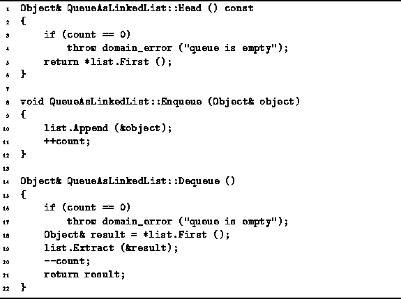

Data Structures and Algorithms
with Object-Oriented Design Patterns in C++
Data Structures and Algorithms
with Object-Oriented Design Patterns in C++
The Head, Enqueue and Dequeue
member functions of the QueueAsLinkedList class are
given in Program  .
.

Program: QueueAsLinkedList Class Enqueue, Head and Dequeue Member Function Definitions
The Head member function
returns a const reference to the object at the head of the queue.
The head of the queue is in the first element of the linked list.
In Chapter we saw that the running time of
LinkedList<T>::First is a constant,
Therefore, the normal running time for the Head function is O(1).
The Enqueue function takes a single argument--a reference to the object to be added to the tail of the queue. The function simply calls the LinkedList<T>::Append function. Since the running time for Append is O(1), the running time of Enqueue is also O(1).
The Dequeue function removes an object from the head
of the queue and returns a reference to that object.
First, it verifies that the queue is not empty
and throws an exception when it is.
If the queue is not empty,
Dequeue saves a reference to the first item in the linked list
in the local variable result.
Then the item of the linked list is removed from the list.
When using the LinkedList<T> class from Chapter ,
the time required to delete the first item from a list
is O(1) regardless of the number of items in the list.
As a result,
the running time of Dequeue is also O(1).
 Copyright © 1997 by Bruno R. Preiss, P.Eng. All rights reserved.
Copyright © 1997 by Bruno R. Preiss, P.Eng. All rights reserved.